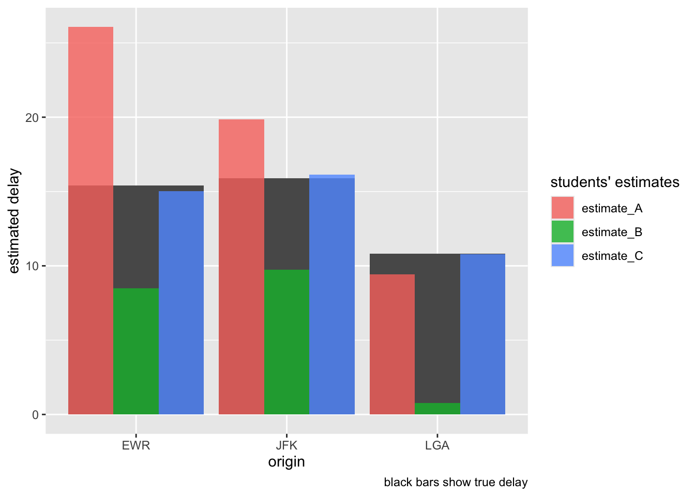

library(nycflights23) # Dataset "flights"
data("flights")
library(tidyverse)samples-nyc2
inference
story
yacsda
1 Aufgabe
Drei Studierende arbeiten für die New Yorker Flughafenbehörde als Werkstudenten. Fragt ihre Chefin eines Tages: “Welcher der drei New Yorker Flughäfen hat im Schnitt die höchste Verspätung? Zieht mal eine kleine Stichprobe und gebt mir eine gute Antwort.”
Studi A überlegt: “Hm, ich schaue mir mal die ersten 1000 Flüge des Jahres und diesen Mittelwert nehme ich als Schätzwert für die Verspätung des ganzen Jahres.”
Studi B argumentiert so: “Hm, ich nehme die ersten 100 Flüge von jedem Monat, rechne davon den Mittelwert aus. Das ist dann mein Schätzwert für die Verspätung des ganzen Jahres, pro Flughafen.”
Studi C hingegen ist folgender Meinung: “Ich ziehe mal eine Zufallsstichprobe, habe ich in der Statistik-Vorlesung gelernt. N=100 sollte genügen.”
Die Chefin bezieht sich übrigens auf das Jahr 2023.
Aufgabe: Welcher der drei Studis macht die beste Vorhersage? Rechnen Sie nach und begründen Sie Ihre Meinung!
2 Lösung
2.1 Setup
Wie viele Flüge gab es?
nrow(flights)[1] 435352Viele!
Welche Variablen gibt es im Datensatz?
glimpse(flights)Rows: 435,352
Columns: 19
$ year <int> 2023, 2023, 2023, 2023, 2023, 2023, 2023, 2023, 2023, 2…
$ month <int> 1, 1, 1, 1, 1, 1, 1, 1, 1, 1, 1, 1, 1, 1, 1, 1, 1, 1, 1…
$ day <int> 1, 1, 1, 1, 1, 1, 1, 1, 1, 1, 1, 1, 1, 1, 1, 1, 1, 1, 1…
$ dep_time <int> 1, 18, 31, 33, 36, 503, 520, 524, 537, 547, 549, 551, 5…
$ sched_dep_time <int> 2038, 2300, 2344, 2140, 2048, 500, 510, 530, 520, 545, …
$ dep_delay <dbl> 203, 78, 47, 173, 228, 3, 10, -6, 17, 2, -10, -9, -7, -…
$ arr_time <int> 328, 228, 500, 238, 223, 808, 948, 645, 926, 845, 905, …
$ sched_arr_time <int> 3, 135, 426, 2352, 2252, 815, 949, 710, 818, 852, 901, …
$ arr_delay <dbl> 205, 53, 34, 166, 211, -7, -1, -25, 68, -7, 4, -13, -14…
$ carrier <chr> "UA", "DL", "B6", "B6", "UA", "AA", "B6", "AA", "UA", "…
$ flight <int> 628, 393, 371, 1053, 219, 499, 996, 981, 206, 225, 800,…
$ tailnum <chr> "N25201", "N830DN", "N807JB", "N265JB", "N17730", "N925…
$ origin <chr> "EWR", "JFK", "JFK", "JFK", "EWR", "EWR", "JFK", "EWR",…
$ dest <chr> "SMF", "ATL", "BQN", "CHS", "DTW", "MIA", "BQN", "ORD",…
$ air_time <dbl> 367, 108, 190, 108, 80, 154, 192, 119, 258, 157, 164, 1…
$ distance <dbl> 2500, 760, 1576, 636, 488, 1085, 1576, 719, 1400, 1065,…
$ hour <dbl> 20, 23, 23, 21, 20, 5, 5, 5, 5, 5, 5, 6, 5, 6, 6, 6, 6,…
$ minute <dbl> 38, 0, 44, 40, 48, 0, 10, 30, 20, 45, 59, 0, 59, 0, 0, …
$ time_hour <dttm> 2023-01-01 20:00:00, 2023-01-01 23:00:00, 2023-01-01 2…Nehmen wir dep_delay als Zielvariable. Die Chefin hat nicht genau gesagt, welche Variable sie meint. Da sieht man es mal wieder: Man muss Annahmen treffen. Ist aber auch schön, denn man kann selber entscheiden, was einem besser gefällt.
2.2 Los geht’s
2.2.1 Studentin A
estimate_A <-
flights |>
select(dep_delay, origin) |>
drop_na() |>
slice(1:1000) |>
group_by(origin) |>
summarise(dep_delay = mean(dep_delay))
estimate_A| origin | dep_delay |
|---|---|
| EWR | 26.1 |
| JFK | 19.9 |
| LGA | 9.4 |
“Klares (?) Ergebnis! EWR, also Newark, hat die größte Verspätung!”
2.2.2 Student B
estimate_B <-
flights |>
select(dep_delay, origin, month) |>
drop_na() |>
group_by(month, origin) |>
slice(1:100) |>
summarise(dep_delay = mean(dep_delay)) |>
group_by(origin) |>
summarise(dep_delay = mean(dep_delay))
estimate_B| origin | dep_delay |
|---|---|
| EWR | 8.47 |
| JFK | 9.74 |
| LGA | 0.76 |
“Knapp! EWR hat fast so viel Verspätung wie JFK.”
2.2.3 Studentin C
set.seed(73)
estimate_C <-
flights |>
select(dep_delay, origin) |>
drop_na() |>
sample_n(size = 100) |>
group_by(origin) |>
summarise(dep_delay = mean(dep_delay))
estimate_C| origin | dep_delay |
|---|---|
| EWR | 2.0 |
| JFK | 14.3 |
| LGA | 8.8 |
“Glasklares (?) Ergebnis! JFK, also John-F-Kennedy, hat die größte Verspätung! Newark ist hingegen superpünktlich!”
2.3 Moment
Leider entbrennt hier ein Streit. Vermutlich einige Eifersuchtsmomente hinter den Kulissen, aber wir wissen nichts Genaues.
Studentin A: “So ein Quatsch, C, du hast die Zufallszahl auf 73 festgelegt, warum gerade diese Zahl?! Bei einer anderen Zahl könnte ein ganz andere Stichprobe und damit ein ganz anderes Ergebnis herauskommen!”
Studentin C: “Ich habe kürzlich gelernt, dass nicht 42, sondern 73 die beste Zahl ist. Also musste ich 73 nehmen!
Student B: “Aber was käme heraus, wenn du 42 als Zufallszahl nehmen würdest, nur mal theoretisch?”
Studentin C: “Äh…”
set.seed(42)
flights |>
select(dep_delay, origin) |>
drop_na() |>
sample_n(size = 100) |>
group_by(origin) |>
summarise(dep_delay = mean(dep_delay))| origin | dep_delay |
|---|---|
| EWR | 28.3 |
| JFK | 7.5 |
| LGA | 9.9 |
Studentin C: “Äh, also… Das spielt doch gar keine Rolle, was rauskommt, denn bei jeder Zahl kann ja was anderes rauskommen.”
A: “Du müsstest also dein Vorgehen ändern… Jede Zahl ausprobieren oder so.”
C: “Liebe A, du mit deinen Flügen vom Jahresbeginn, das ist doch totaler Quatsch, an deiner Stelle wäre ich lieber still.”
A: “Aber es kommt was Gutes raus mit meiner Methode!”
B: “Woher willst du überhaupt wissen, ob es was Gutes ist?”
A: “Wirst schon sehen!”
C: “Puh, also gut, ich rechne noch mal. Ich zieh einfach ne Menge Stichproben, mit zufälligen Seed-Nummern …”
A: “Whatever!”
C: “Moment.., hier kommt Newark, EWR.”
n_reps <- 100 # Anzahl von Stichproben
sample_size <- 100 # Umfang jeder Stichprobe
ewr_viele_schaetzwerte <-
replicate(n_reps, flights |>
select(dep_delay, origin) |>
filter(origin == "EWR") |>
drop_na() |>
sample_n(size = sample_size) |>
summarise(dep_delay = mean(dep_delay))) |>
as.numeric() |>
mean()
ewr_viele_schaetzwerte[1] 15B: “Wow, C, du bist halt schon die Statistik-Checkerin…”.
A: “Hey B, hör gefälligst auf, dich bei A einzuschmeicheln!”
B: “Jedenfalls ist das Ergebnis von A … anders als unsere!”
C: “Hier noch mal mein Prinzip für die anderen Flughäfen. JFK:”
jfk_viele_schaetzwerte <-
replicate(n_reps, flights |>
select(dep_delay, origin) |>
filter(origin == "JFK") |>
drop_na() |>
sample_n(size = sample_size) |>
summarise(dep_delay = mean(dep_delay))) |>
as.numeric() |>
mean()
jfk_viele_schaetzwerte[1] 16C: “Und LaGuardia:”
lga_viele_schaetzwerte <-
replicate(n_reps, flights |>
select(dep_delay, origin) |>
filter(origin == "LGA") |>
drop_na() |>
sample_n(size = sample_size) |>
summarise(dep_delay = mean(dep_delay))) |>
as.numeric() |>
mean()
lga_viele_schaetzwerte[1] 11C: “Also, unterm Strich, LGA rules! LGA hat die geringste Verspätung im Schnitt, nach meiner Rechnung.”
lga_viele_schaetzwerte[1] 11ewr_viele_schaetzwerte[1] 15jfk_viele_schaetzwerte[1] 162.4 Fazit?
A: “Okay, meine Methode war ein bisschen zu einfach. Aber hat auch am wenigsten Arbeit gemacht. Das nennt man wirtschaftlich vorgehen, nur darum geht’s im Business. Also hab ich trotzdem gewonnen!”
B: “Nope, mein Vorgehen ist in Wirklichkeit das Beste. Ich hab von jedem Monat 100 Flüge genommen, so hat sich alles super ausgeglichen, Jahreszeiten und so, glaub ich. Und es wäre nicht so viel Aufwand wie die zich Tausend Stichproben, die C gezogen hat.”
C: “Kann ja alles sein, aber mein Vorgehen hat am meisten Spaß gemacht. Übrigens B, wir könnten uns, also unsere beiden Ideen, doch zusammenlegn, kombinieren. Das müsste ein super Ergebnis geben. Wollen wir zwei uns das mal zusammen anschauen, nur wir zwei?”
3 Die Chefin meldet sich zu Wort
Chefin: “Lasst mich da mal ran.”
3.1 Wahre Verspätung
Die Chefin berechnet die wahre Verspätung über alle Flüge 2023 (in YNC) insgesamt (also in der Population der NYC-Flüge von 2023):
wahre_verspaetung <-
flights |>
select(origin, dep_delay) |>
drop_na() |>
group_by(origin) |>
summarise(dep_delay = mean(dep_delay))
wahre_verspaetung| origin | dep_delay |
|---|---|
| EWR | 15 |
| JFK | 16 |
| LGA | 11 |
Chefin: “LaGuardia hat am wenigsten Verspätung. JFK am meisten, aber dicht gefolgt von EWR.”
Chefin: “Jetzt schauen wir mal, wer pro Flughafen am genauesten geschätzt hat.”
modellgueten <-
wahre_verspaetung |>
mutate(estimate_A = estimate_A$dep_delay,
estimate_B = estimate_B$dep_delay,
estimate_C = c(
ewr_viele_schaetzwerte,
jfk_viele_schaetzwerte,
lga_viele_schaetzwerte)
) |>
pivot_longer(contains("estimate"),
names_to = "student",
values_to = "estimate") |>
mutate(error_abs = abs(dep_delay - estimate)) Chefin: “LaGuardia wurde ingesamt am genauesten geschätzt, von allen drei Studenten. Aber Studentin A überschätzt die Verspätung massiv bei Newark und bei JFK.”
Chefin: “Hier sind die Details.”
modellgueten |>
ggplot(aes(y = estimate, x = origin)) +
# geom_line() +
geom_col(data = wahre_verspaetung,
aes(x = origin, y = dep_delay)) +
geom_col(aes(fill = student),
position = "dodge",
alpha = .8) +
labs(caption = "black bars show true delay",
y = "estimated delay",
fill = "students' estimates")
3.2 And the winner is …
Chefin: “And the winner is …”
modellgueten |>
ggplot(aes(x = student, y = error_abs)) +
geom_col()Hier sieht man dass C am besten abschneidet, also die geringste absolute Abweichung von der wahren Verspätung hat. A und B schneiden schlechter ab.
modellgueten_summ <-
modellgueten |>
group_by(student) |>
summarise(error_abs = mean(error_abs)) |>
arrange(error_abs)
modellgueten_summ| student | error_abs |
|---|---|
| estimate_C | 0.22 |
| estimate_A | 5.34 |
| estimate_B | 7.72 |
Chefin: “Sieht so aus, als hätte C klar gewonnen. A und B sind deutlich schlechter.”
A: “Mensch, C, du bist hier der Datenhecht!”
C: “Ich glaub’s ja nicht, ich meine, ich hab’s immer gewusst!”
B: “Moment, C hat nur gewonnen, weil sie so viele Stichproben gezogen hat. Das war doch totaler Overkill. Gibt’s ja gar nicht in der Praxis.”
s